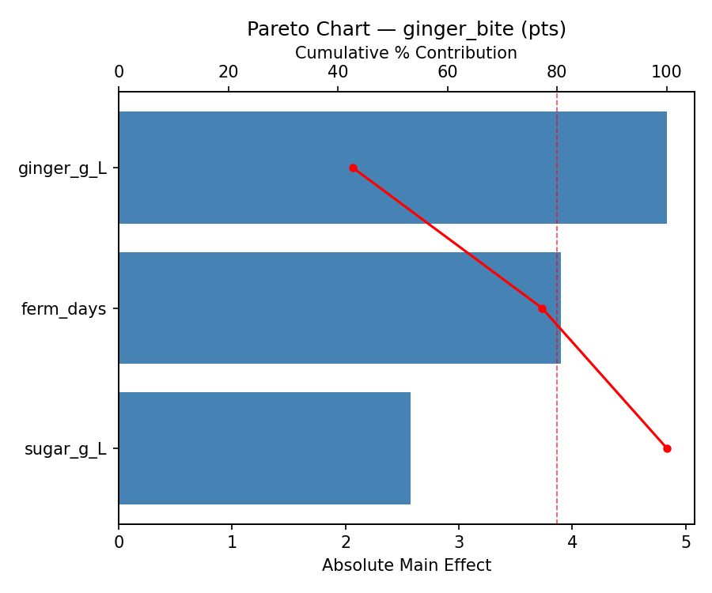
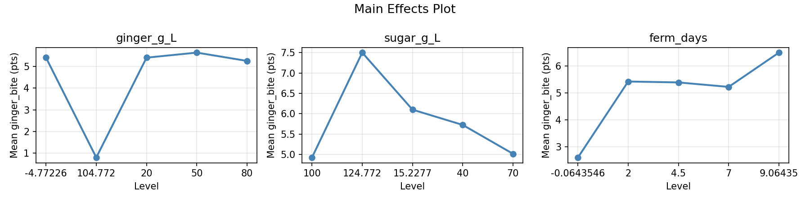
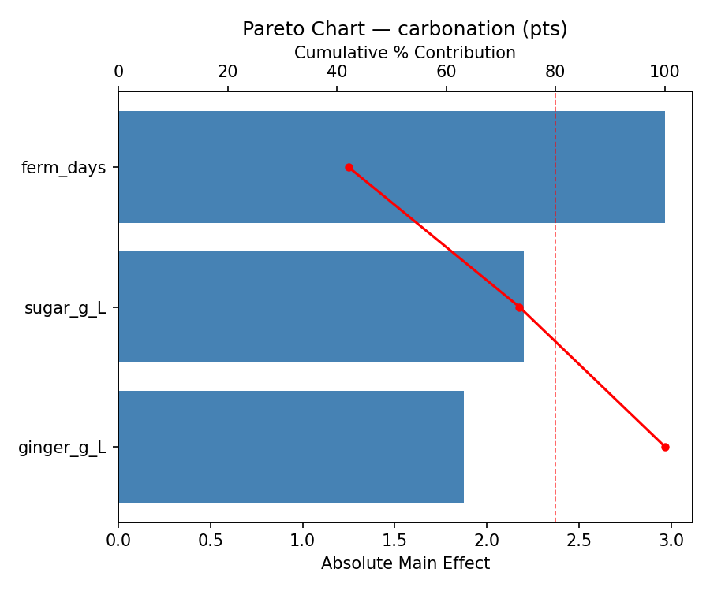
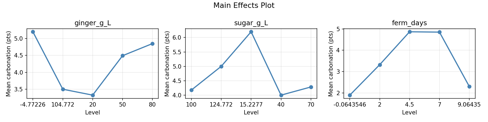
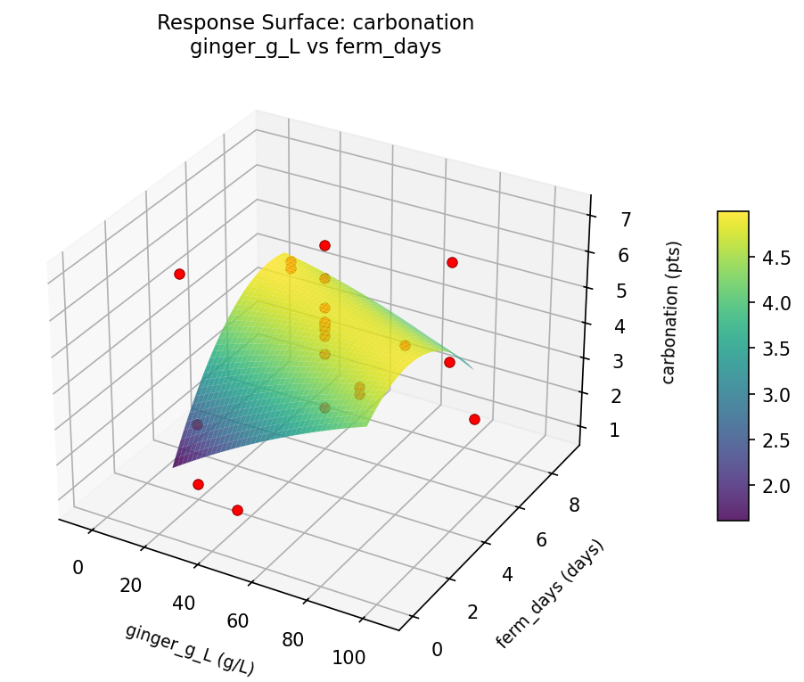
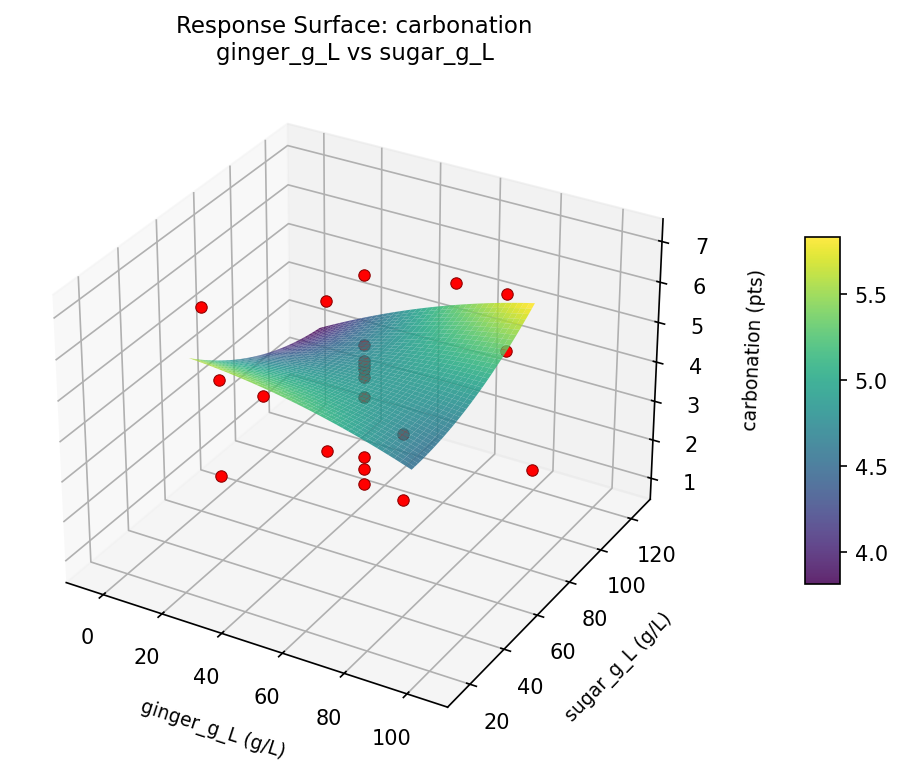
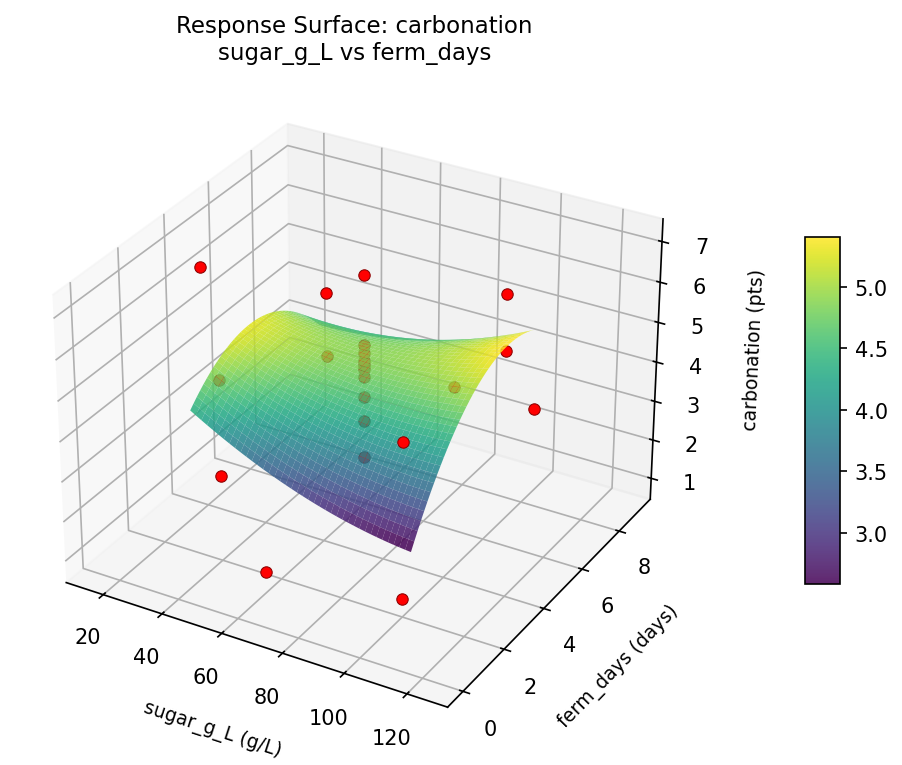
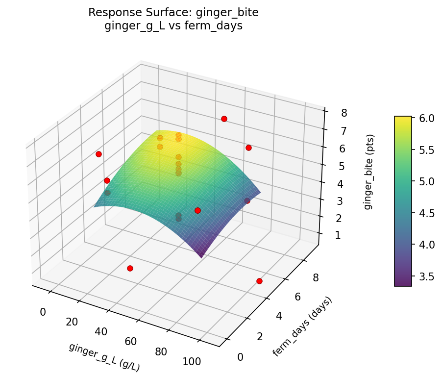
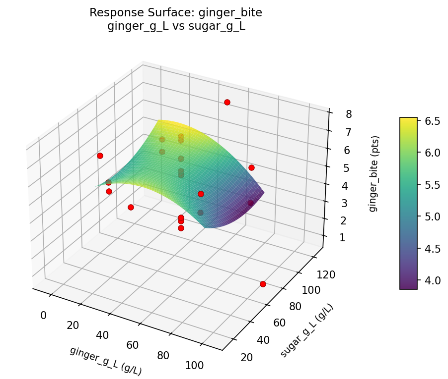
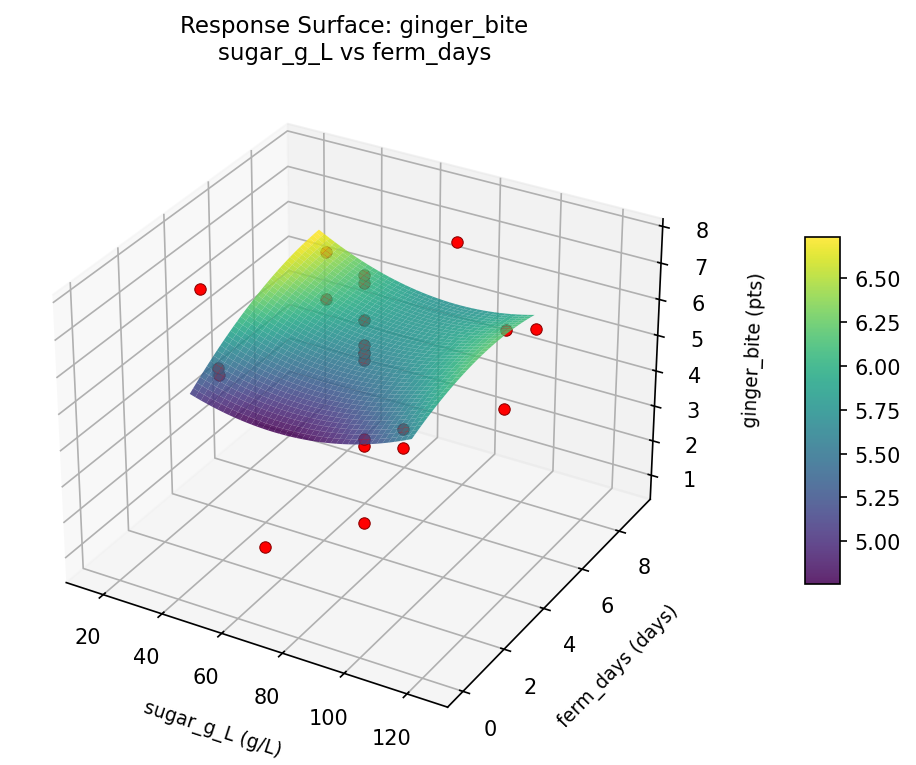

Experimental Setup
Factors
| Factor | Low | High | Unit |
|---|
ginger_g_L | 20 | 80 | g/L |
sugar_g_L | 40 | 100 | g/L |
ferm_days | 2 | 7 | days |
Fixed: starter = ginger_bug, lemon_juice = 15mL/L
Responses
| Response | Direction | Unit |
|---|
ginger_bite | ↑ maximize | pts |
carbonation | ↑ maximize | pts |
Configuration
{
"metadata": {
"name": "Ginger Beer Fermentation",
"description": "Central composite design to maximize ginger bite and carbonation while controlling sweetness by tuning ginger amount, sugar, and fermentation time"
},
"factors": [
{
"name": "ginger_g_L",
"levels": [
"20",
"80"
],
"type": "continuous",
"unit": "g/L"
},
{
"name": "sugar_g_L",
"levels": [
"40",
"100"
],
"type": "continuous",
"unit": "g/L"
},
{
"name": "ferm_days",
"levels": [
"2",
"7"
],
"type": "continuous",
"unit": "days"
}
],
"fixed_factors": {
"starter": "ginger_bug",
"lemon_juice": "15mL/L"
},
"responses": [
{
"name": "ginger_bite",
"optimize": "maximize",
"unit": "pts"
},
{
"name": "carbonation",
"optimize": "maximize",
"unit": "pts"
}
],
"settings": {
"operation": "central_composite",
"test_script": "use_cases/248_ginger_beer/sim.sh"
}
}
Experimental Matrix
The Central Composite Design produces 22 runs. Each row is one experiment with specific factor settings.
| Run | ginger_g_L | sugar_g_L | ferm_days |
|---|
| 1 | 50 | 70 | 4.5 |
| 2 | 80 | 40 | 7 |
| 3 | 20 | 100 | 2 |
| 4 | 50 | 124.772 | 4.5 |
| 5 | 50 | 70 | 4.5 |
| 6 | -4.77226 | 70 | 4.5 |
| 7 | 50 | 70 | -0.0643546 |
| 8 | 50 | 70 | 4.5 |
| 9 | 80 | 100 | 2 |
| 10 | 104.772 | 70 | 4.5 |
| 11 | 50 | 70 | 4.5 |
| 12 | 50 | 15.2277 | 4.5 |
| 13 | 50 | 70 | 4.5 |
| 14 | 20 | 40 | 7 |
| 15 | 50 | 70 | 4.5 |
| 16 | 80 | 40 | 2 |
| 17 | 50 | 70 | 9.06435 |
| 18 | 80 | 100 | 7 |
| 19 | 50 | 70 | 4.5 |
| 20 | 20 | 40 | 2 |
| 21 | 20 | 100 | 7 |
| 22 | 50 | 70 | 4.5 |
Step-by-Step Workflow
1
Preview the design
$ python doe.py info --config use_cases/248_ginger_beer/config.json
2
Generate the runner script
$ python doe.py generate --config use_cases/248_ginger_beer/config.json \
--output use_cases/248_ginger_beer/results/run.sh --seed 42
3
Execute the experiments
$ bash use_cases/248_ginger_beer/results/run.sh
4
Analyze results
$ python doe.py analyze --config use_cases/248_ginger_beer/config.json
5
Get optimization recommendations
$ python doe.py optimize --config use_cases/248_ginger_beer/config.json
6
Generate the HTML report
$ python doe.py report --config use_cases/248_ginger_beer/config.json \
--output use_cases/248_ginger_beer/results/report.html
Features Exercised
| Feature | Value |
|---|
| Design type | central_composite |
| Factor types | continuous (all 3) |
| Arg style | double-dash |
| Responses | 2 (ginger_bite ↑, carbonation ↑) |
| Total runs | 22 |
Analysis Results
Generated from actual experiment runs using the DOE Helper Tool.
Response: ginger_bite
Top factors: ginger_g_L (42.7%), ferm_days (34.5%), sugar_g_L (22.8%).
Pareto Chart

Main Effects Plot

Response: carbonation
Top factors: ferm_days (42.1%), sugar_g_L (31.2%), ginger_g_L (26.6%).
Pareto Chart

Main Effects Plot

Response Surface Plots
3D surfaces fitted with quadratic RSM. Red dots are observed data points.
carbonation ginger g L vs ferm days

carbonation ginger g L vs sugar g L

carbonation sugar g L vs ferm days

ginger bite ginger g L vs ferm days

ginger bite ginger g L vs sugar g L

ginger bite sugar g L vs ferm days

Full Analysis Output
RSM surface: rsm_ginger_bite_ginger_g_L_vs_sugar_g_L.png
RSM surface: rsm_ginger_bite_ginger_g_L_vs_ferm_days.png
RSM surface: rsm_ginger_bite_sugar_g_L_vs_ferm_days.png
RSM surface: rsm_carbonation_ginger_g_L_vs_sugar_g_L.png
RSM surface: rsm_carbonation_ginger_g_L_vs_ferm_days.png
RSM surface: rsm_carbonation_sugar_g_L_vs_ferm_days.png
=== Main Effects: ginger_bite ===
Factor Effect Std Error % Contribution
--------------------------------------------------------------
ginger_g_L 4.8333 0.3658 42.7%
ferm_days 3.9000 0.3658 34.5%
sugar_g_L 2.5750 0.3658 22.8%
=== Summary Statistics: ginger_bite ===
ginger_g_L:
Level N Mean Std Min Max
------------------------------------------------------------
-4.77226 1 5.4000 0.0000 5.4000 5.4000
104.772 1 0.8000 0.0000 0.8000 0.8000
20 4 5.4000 0.3559 5.0000 5.7000
50 12 5.6333 1.7850 2.6000 7.7000
80 4 5.2500 1.2583 3.5000 6.5000
sugar_g_L:
Level N Mean Std Min Max
------------------------------------------------------------
100 4 4.9250 0.9946 3.5000 5.7000
124.772 1 7.5000 0.0000 7.5000 7.5000
15.2277 1 6.1000 0.0000 6.1000 6.1000
40 4 5.7250 0.5560 5.2000 6.5000
70 12 5.0167 2.1362 0.8000 7.7000
ferm_days:
Level N Mean Std Min Max
------------------------------------------------------------
-0.0643546 1 2.6000 0.0000 2.6000 2.6000
2 4 5.4250 0.2986 5.0000 5.7000
4.5 12 5.3917 2.0848 0.8000 7.7000
7 4 5.2250 1.2685 3.5000 6.5000
9.06435 1 6.5000 0.0000 6.5000 6.5000
=== Main Effects: carbonation ===
Factor Effect Std Error % Contribution
--------------------------------------------------------------
ferm_days 2.9667 0.3250 42.1%
sugar_g_L 2.2000 0.3250 31.2%
ginger_g_L 1.8750 0.3250 26.6%
=== Summary Statistics: carbonation ===
ginger_g_L:
Level N Mean Std Min Max
------------------------------------------------------------
-4.77226 1 5.2000 0.0000 5.2000 5.2000
104.772 1 3.5000 0.0000 3.5000 3.5000
20 4 3.3250 1.9483 0.9000 5.0000
50 12 4.4917 1.5547 1.9000 7.1000
80 4 4.8500 1.1475 3.4000 6.2000
sugar_g_L:
Level N Mean Std Min Max
------------------------------------------------------------
100 4 4.1750 2.2809 0.9000 6.2000
124.772 1 5.0000 0.0000 5.0000 5.0000
15.2277 1 6.2000 0.0000 6.2000 6.2000
40 4 4.0000 1.2000 2.6000 5.0000
70 12 4.2833 1.4886 1.9000 7.1000
ferm_days:
Level N Mean Std Min Max
------------------------------------------------------------
-0.0643546 1 1.9000 0.0000 1.9000 1.9000
2 4 3.3250 1.9483 0.9000 5.0000
4.5 12 4.8667 1.1625 2.6000 7.1000
7 4 4.8500 1.1475 3.4000 6.2000
9.06435 1 2.3000 0.0000 2.3000 2.3000
Pareto chart (ginger_bite): use_cases/248_ginger_beer/results/analysis/pareto_ginger_bite.png
Pareto chart (carbonation): use_cases/248_ginger_beer/results/analysis/pareto_carbonation.png
Main effects (ginger_bite): use_cases/248_ginger_beer/results/analysis/main_effects_ginger_bite.png
Main effects (carbonation): use_cases/248_ginger_beer/results/analysis/main_effects_carbonation.png
Optimization Recommendations
=== Optimization: ginger_bite ===
Direction: maximize
Best observed run: #18
ginger_g_L = 50
sugar_g_L = 70
ferm_days = 4.5
Value: 7.7
RSM Model (linear, R² = 0.0422, Adj R² = -0.1175):
Coefficients:
intercept +5.2909
ginger_g_L -0.2647
sugar_g_L +0.2564
ferm_days -0.2049
RSM Model (quadratic, R² = 0.3296, Adj R² = -0.1732):
Coefficients:
intercept +5.6817
ginger_g_L -0.2647
sugar_g_L +0.2563
ferm_days -0.2049
ginger_g_L*sugar_g_L -0.1875
ginger_g_L*ferm_days -0.4125
sugar_g_L*ferm_days -1.2875
ginger_g_L^2 -0.0904
sugar_g_L^2 -0.3604
ferm_days^2 -0.1354
Curvature analysis:
sugar_g_L coef=-0.3604 concave (has a maximum)
ferm_days coef=-0.1354 concave (has a maximum)
ginger_g_L coef=-0.0904 negligible curvature
Notable interactions:
sugar_g_L*ferm_days coef=-1.2875 (antagonistic)
ginger_g_L*ferm_days coef=-0.4125 (antagonistic)
Predicted optimum (from linear model):
ginger_g_L = 20
sugar_g_L = 100
ferm_days = 2
Predicted value: 6.0168
Model quality: Weak fit — consider adding center points or using a different design.
Factor importance:
1. sugar_g_L (effect: 3.1, contribution: 60.8%)
2. ferm_days (effect: 1.1, contribution: 21.1%)
3. ginger_g_L (effect: 0.9, contribution: 18.1%)
=== Optimization: carbonation ===
Direction: maximize
Best observed run: #18
ginger_g_L = 50
sugar_g_L = 70
ferm_days = 4.5
Value: 7.1
RSM Model (linear, R² = 0.0589, Adj R² = -0.0980):
Coefficients:
intercept +4.3318
ginger_g_L +0.0522
sugar_g_L +0.2027
ferm_days +0.3900
RSM Model (quadratic, R² = 0.3186, Adj R² = -0.1924):
Coefficients:
intercept +4.4608
ginger_g_L +0.0522
sugar_g_L +0.2027
ferm_days +0.3900
ginger_g_L*sugar_g_L +0.0750
ginger_g_L*ferm_days -0.8000
sugar_g_L*ferm_days +0.5000
ginger_g_L^2 +0.2305
sugar_g_L^2 +0.0205
ferm_days^2 -0.4445
Curvature analysis:
ferm_days coef=-0.4445 concave (has a maximum)
ginger_g_L coef=+0.2305 convex (has a minimum)
sugar_g_L coef=+0.0205 negligible curvature
Notable interactions:
ginger_g_L*ferm_days coef=-0.8000 (antagonistic)
sugar_g_L*ferm_days coef=+0.5000 (synergistic)
Predicted optimum (from linear model):
ginger_g_L = 50
sugar_g_L = 70
ferm_days = 9.06435
Predicted value: 5.0439
Model quality: Weak fit — consider adding center points or using a different design.
Factor importance:
1. ferm_days (effect: 3.9, contribution: 45.7%)
2. sugar_g_L (effect: 3.6, contribution: 42.2%)
3. ginger_g_L (effect: 1.0, contribution: 12.0%)